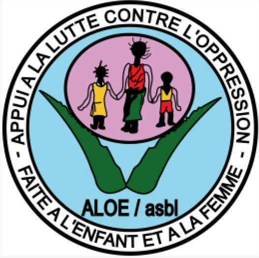
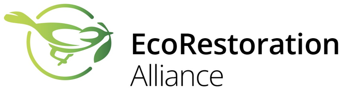
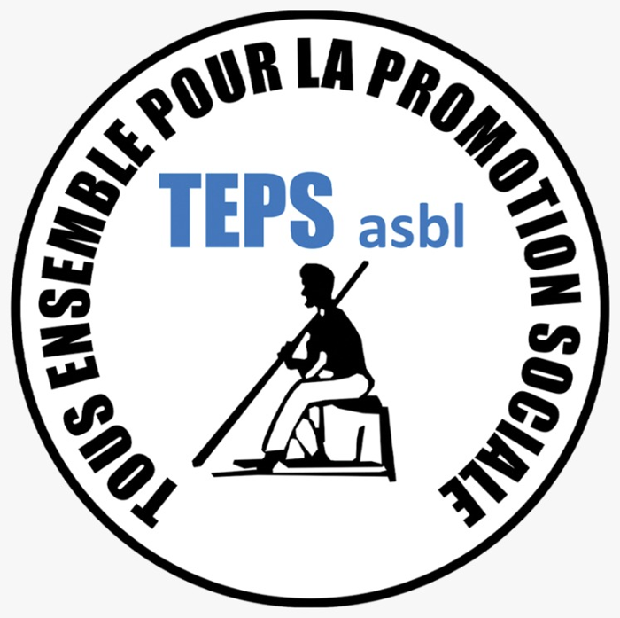
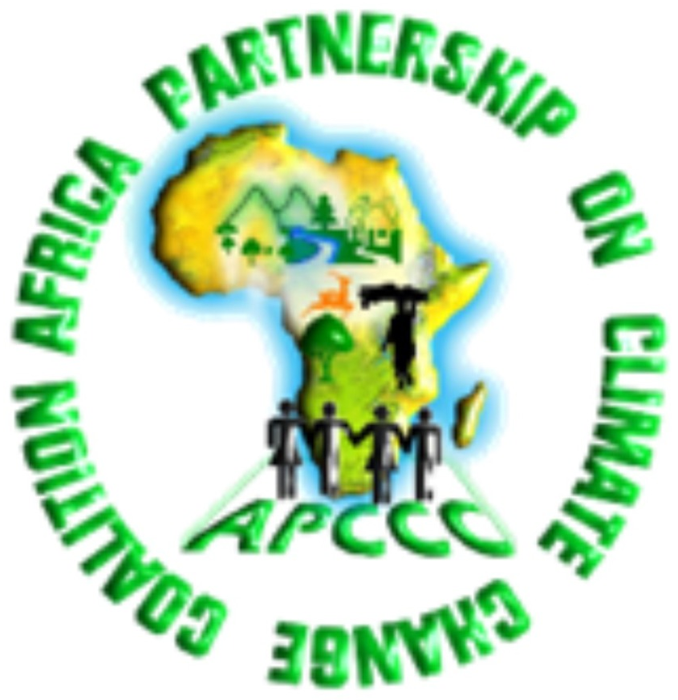
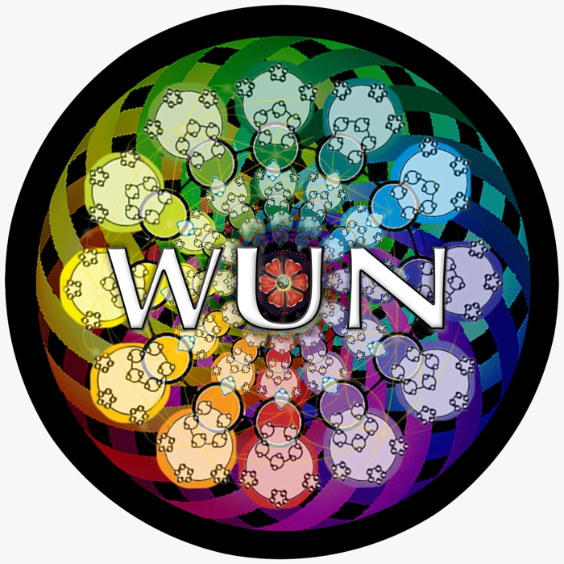

Agriculture durable
Sols vivants, transformation et écoulement des produits des paysans.
Restaurer les écosystèmes. Autonomiser les communautés. Bâtir des avenirs résilients.
Un catalyseur de changement positif : modes de vie durables, protection de l’environnement et droits de l’homme au cœur du développement de nos sociétés.
Sols vivants, transformation et écoulement des produits des paysans.
Eau, hygiène et assainissement (WASH) pour les communautés.
Enfants, femmes, peuples autochtones : défendre et autonomiser.
Centres EcoFaLab et intelligence artificielle au service de l’agriculture et de l’environnement.
Un monde où les communautés vivent en harmonie avec leur environnement.
Promouvoir une gestion environnementale éclairée, soutenir l’agriculture durable et défendre les droits de l’homme.




